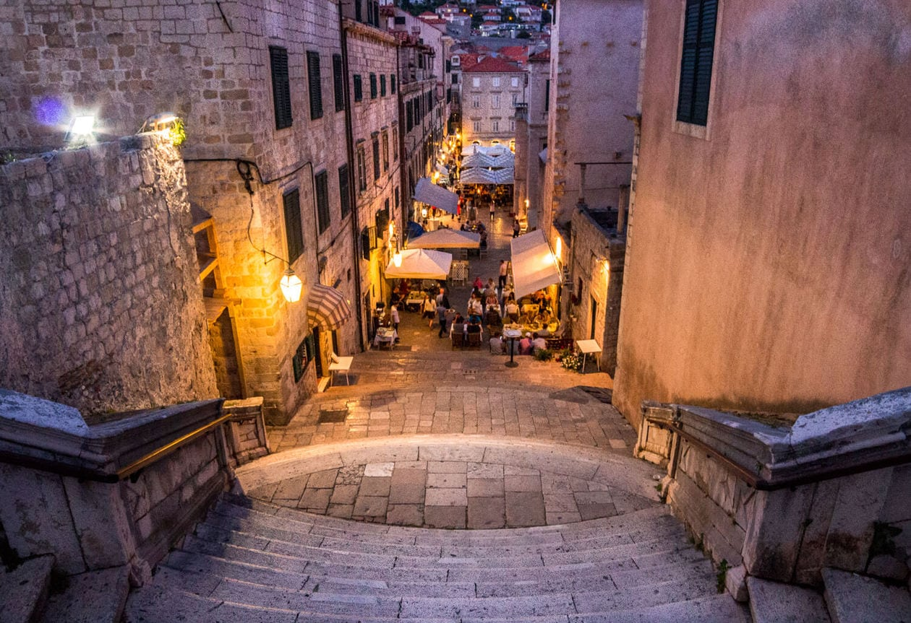
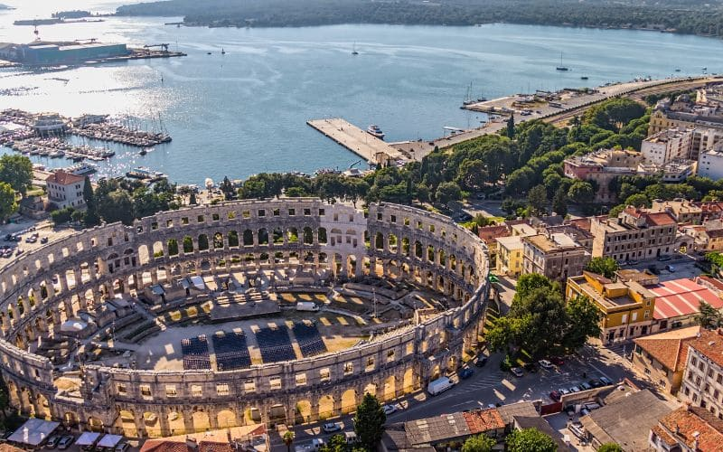
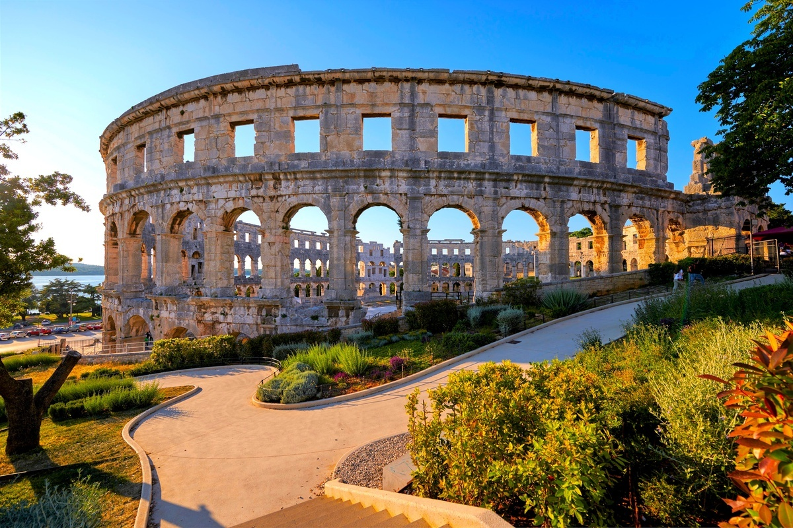
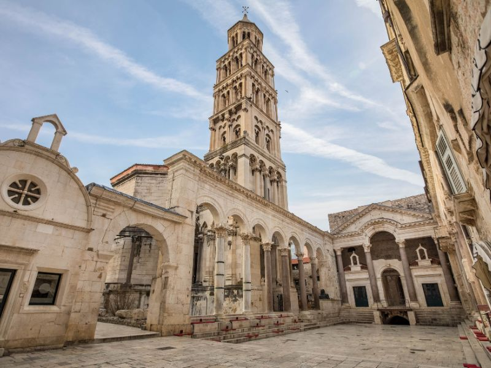
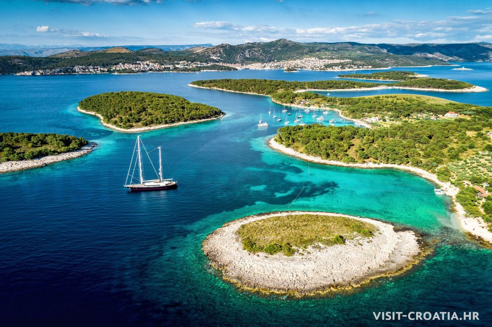
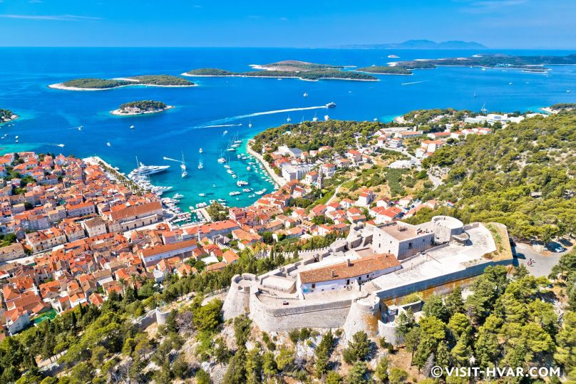
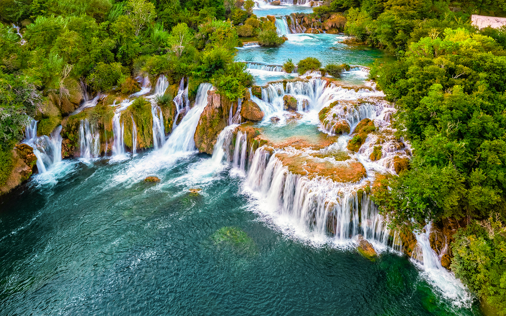
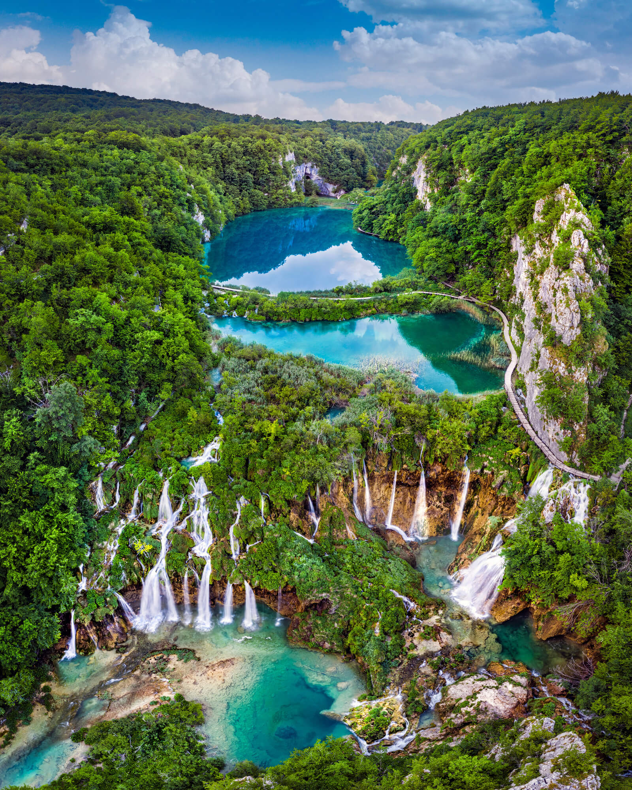
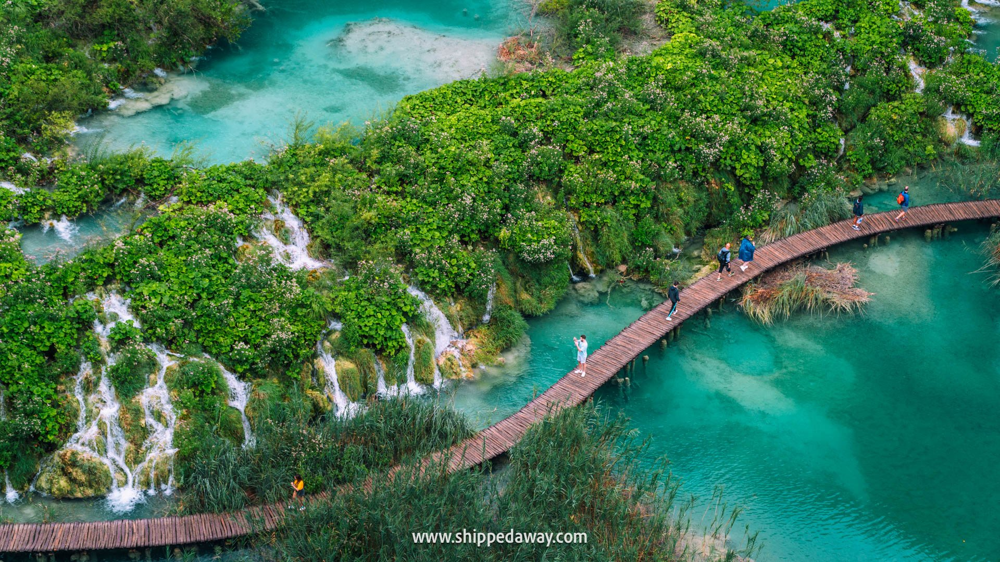

Dubrovnik Old Town


Dubrovnik Old Town, the “Pearl of the Adriatic,” enchants visitors with its centuries-old walls, cobblestone streets, and terracotta
rooftops overlooking the shimmering Adriatic Sea. Walking through its historic gates is like stepping into a living museum, where
medieval forts, charming squares, and Baroque churches tell tales of seafaring, trade, and resilience. Whether wandering along the
city walls at sunset or exploring hidden alleyways, Dubrovnik captivates with its blend of history, culture, and timeless beauty —
a must-experience destination for every traveler.
Best time to visit:
Spring (April–June) or early autumn (September–October) for mild weather and fewer tourists. Morning visits are ideal for wandering the streets
before cruise ships arrive.
Opening hours:
Open daily; main attractions and museums generally 9:00–18:00 (varies by season).
Entry:
Walking the city walls requires a ticket (€35 approx. adult, discounts for students/children). Most streets and squares are free to explore.
SEE MAP
Amphitheatar, Pula


The Pula Amphitheatre, standing proudly on the Istrian coast, is one of the best-preserved Roman arenas in the world. Built in the 1st
century AD, its towering stone arches and elliptical structure once hosted gladiators and grand spectacles, echoing the drama of
ancient Rome. Today, visitors can walk through its monumental corridors, marvel at its architecture, and even attend concerts and
events that breathe new life into its historic walls. A symbol of endurance and history, the Pula Amphitheatre invites travelers to
step back in time while enjoying the vibrant spirit of modern Croatia.
Best time to visit:
Spring (April–June) or early autumn (September–October) for pleasant weather and fewer crowds. Morning visits are best to avoid midday heat.
Opening hours:
Daily, usually 8:00–19:00 in summer; slightly shorter hours in winter.
Entry:
Tickets required to enter the amphitheater (€8–10 for adults, discounts for students and children).
SEE MAP
Diocletian's Palace, Split


Diocletian's Palace in Split stands as a living monument to ancient Rome, where history and modern life intertwine in every stone.
Built for Emperor Diocletian in the 4th century, its labyrinthine alleys, grand peristyles, and imposing gates transport visitors back
in time, while cafés, shops, and residences bring it vibrantly into the present. Wander through this UNESCO World Heritage site,
explore hidden courtyards, and imagine the echoes of imperial grandeur that still linger in its walls. A timeless blend of history,
culture, and daily life, Diocletian’s Palace is a must-see for every traveler to Croatia.
Best time to visit:
Spring and early autumn (April–June, September–October) for mild weather and fewer crowds. Early mornings are ideal to explore the palace
without too many tourists.
Opening hours:
Daily, typically from 9:00–19:00 in summer; some areas like the cellars may have slightly shorter hours.
Entry:
Most of the palace grounds are free to wander. Certain areas (like the cellars and cathedral) require a small ticket (€3–5).
SEE MAP
Hvar Island


Hvar Island, bathed in golden sunlight and kissed by the Adriatic waves, is a jewel of Croatia’s Dalmatian coast. From its charming
medieval streets and fragrant lavender fields to lively harborfronts and hidden coves, every corner of Hvar invites exploration and
wonder. Historic fortresses watch over picturesque towns, while pristine beaches and crystal-clear waters beckon for relaxation and
adventure. A destination where natural beauty, rich culture, and vibrant island life converge, Hvar offers a timeless escape that
lingers in memory long after you leave.
Best time to visit:
Late spring to early autumn (May–September) for warm, sunny weather, blooming lavender fields, and vibrant coastal life. Mornings and late
afternoons are perfect for sightseeing without the midday crowds.
Opening hours:
Most attractions, beaches, and historic sites are open daily, generally from 9:00–19:00 in summer.
Entry:
Historic sites like Hvar Fortress (Fortica) require a small entrance fee (€2–5). Beaches and public areas are mostly free.
SEE MAP
Krka National Park


Krka National Park is a mesmerizing haven of rivers, waterfalls, and serene landscapes, where nature’s rhythm flows in harmony with
time. Wander along wooden paths that wind through lush greenery, discover cascading waters that sparkle in the sunlight, and listen
to the gentle murmur of the Krka River as it weaves through the park. Home to rich wildlife and historic monasteries perched along its
banks, Krka offers a blend of natural wonder and cultural heritage. A visit here is a journey into a living painting, where every
corner invites awe, reflection, and the simple joy of being surrounded by untamed beauty.
Best time to visit:
Spring and early autumn for comfortable weather, full waterfalls, and fewer crowds. Mornings are ideal for calmer waters and better photography.
Opening hours:
Open daily, usually 8:00–18:00 (longer in summer). Boardwalks and walking trails are accessible during daylight.
Entry:
Tickets vary depending on the season (~€10–30). Some areas may have additional fees for boat rides or guided tours.
SEE MAP
Plitvice Lakes National Park


Plitvice Lakes National Park is a breathtaking mosaic of emerald lakes, cascading waterfalls, and lush forests that seem to whisper
ancient secrets. Wooden walkways meander over crystal-clear waters, inviting visitors to wander through this fairytale landscape. Each
step reveals a new perspective, from shimmering turquoise pools to roaring cascades, where nature’s beauty unfolds in every corner.
A UNESCO World Heritage site, Plitvice Lakes is not just a park—it’s a serene escape, a living poem of water, stone, and greenery,
captivating every traveler who steps into its magical embrace.
Best time to visit:
Spring and early autumn for lush greenery, pleasant weather, and fewer crowds. Early morning is ideal to avoid buses of tourists.
Opening hours:
Open daily, generally 7:00–19:00 (summer may extend to 20:00). Boardwalks and trails are accessible during daylight.
Entry:
Tickets vary by season and age (~€15–35). Certain areas may have guided-tour options for extra fees.
SEE MAP